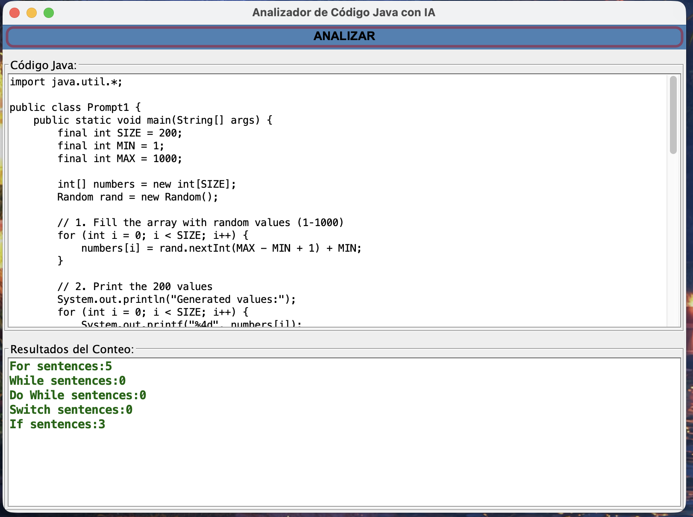
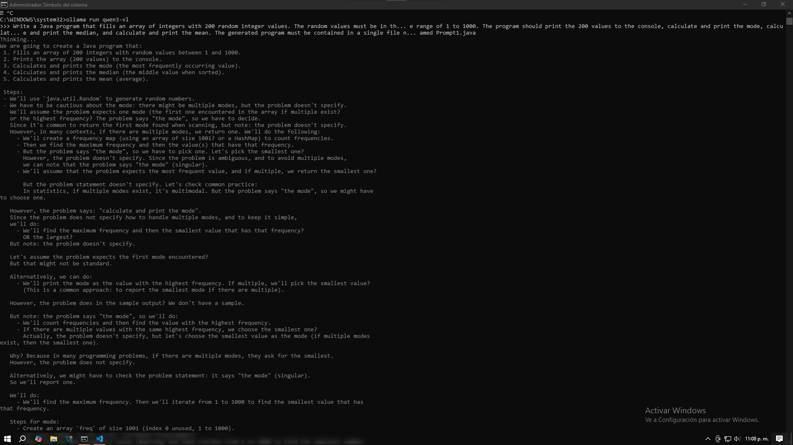
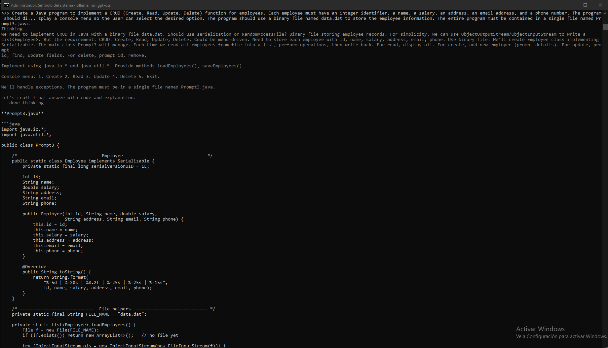
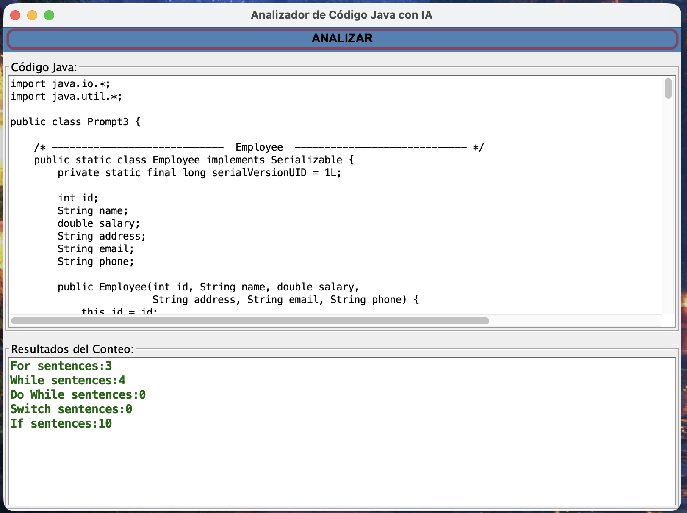
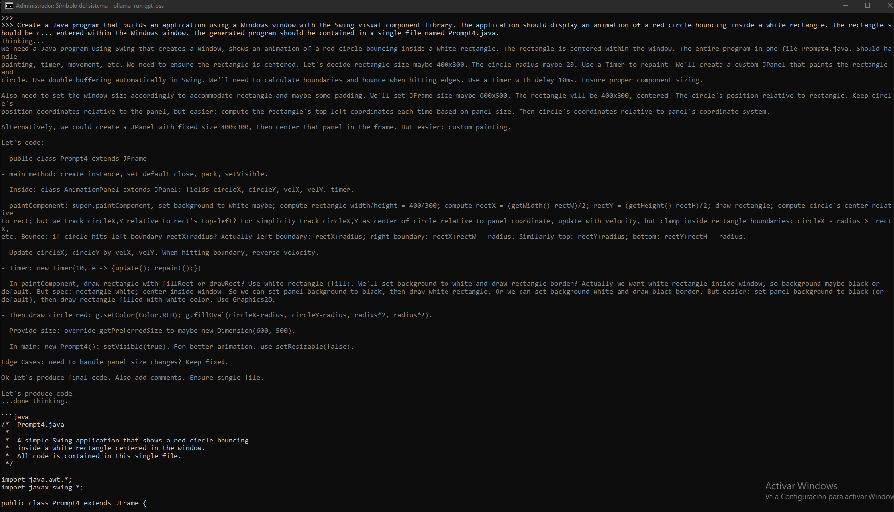
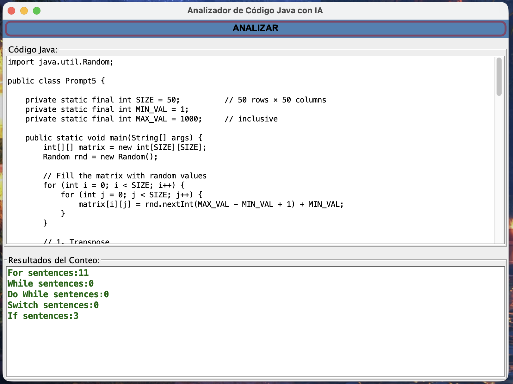
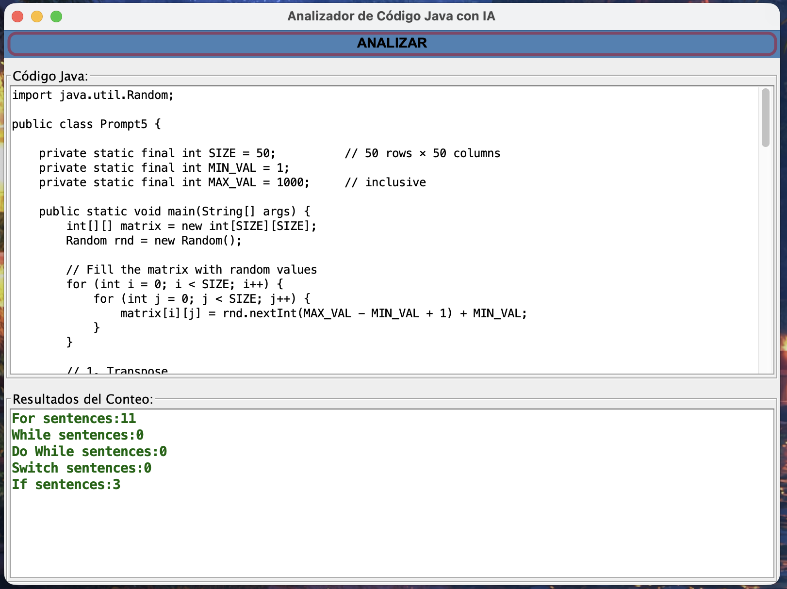

Análisis de Código Generado por LLMs con ANTLR
INSTITUTO TECNOLÓGICO DE MORELIA
José María Morelos y Pavón
Presentan:
- Benjamín Castillo Garcia (NC: 22120642)
- Salvador Chavez Acosta (NC: 22120644)
- Marco Antonio Morelos Martinez (NC: 21121553)
Profesor: J. Guadalupe Ramos Diaz
Fecha: Diciembre 2025
1. Objetivo
Analizar y comparar la estructura sintáctica (ciclos y condicionales) del código Java generado por 5 modelos de Inteligencia Artificial (GPT-OSS, Qwen3-VL, Deepseek-R1, Qwen3-Coder, Gemma 3) utilizando un compilador personalizado basado en la gramática de Java y ANTLR4.
2. Herramientas
- Generador de Parser: ANTLR 4.13.2
- Entorno de IA: Ollama (Local en macOS)
- Modelos Evaluados: Gpt-oss, Qwen3-vl, Deepseek-r1, Qwen3-coder, Gemma3.
3. Resultados Experimentales
PROMPT 1: Estadística de Arreglos
| Modelo | For | While | Do While | Switch | If |
|---|---|---|---|---|---|
| Gpt-oss | 5 | 0 | 0 | 0 | 3 |
| Qwen3-vl | 6 | 0 | 0 | 0 | 2 |
| Deepseek-r1 | 4 | 0 | 0 | 0 | 2 |
| Qwen3-coder | 5 | 0 | 0 | 0 | 3 |
| Gemma 3 | 4 | 0 | 0 | 0 | 2 |
Evidencia Visual (Ejemplos Seleccionados)
1. Modelo: Gpt-oss
Código Generado:

Compilación:
2. Modelo: Qwen3-vl

PROMPT 2: Ordenamiento Quicksort
| Modelo | For | While | Do While | Switch | If |
|---|---|---|---|---|---|
| Gpt-oss | 5 | 0 | 0 | 0 | 3 |
| Qwen3-vl | 3 | 0 | 0 | 0 | 2 |
| Deepseek-r1 | 3 | 0 | 0 | 0 | 2 |
| Qwen3-coder | 5 | 0 | 0 | 0 | 3 |
| Gemma 3 | 1 | 0 | 0 | 0 | 0 |
Ejemplo: Gpt-oss


PROMPT 3: Sistema CRUD de Empleados
| Modelo | For | While | Do While | Switch | If |
|---|---|---|---|---|---|
| Gpt-oss | 3 | 4 | 0 | 0 | 10 |
| Qwen3-vl | 2 | 0 | 1 | 1 | 5 |
| Deepseek-r1 | 3 | 1 | 1 | 1 | 10 |
| Qwen3-coder | 4 | 3 | 0 | 1 | 12 |
| Gemma 3 | 0 | 0 | 1 | 1 | 8 |
Ejemplo: Gpt-oss (CRUD)
 PROMPT 4: Animación Swing
| Modelo | For | While | Do While | Switch | If |
|---|---|---|---|---|---|
| Gpt-oss | 0 | 0 | 0 | 0 | 4 |
| Qwen3-vl | 0 | 0 | 0 | 0 | 4 |
| Deepseek-r1 | 0 | 0 | 0 | 0 | 2 |
| Qwen3-coder | 0 | 0 | 0 | 0 | 2 |
| Gemma 3 | 0 | 0 | 0 | 0 | 2 |
Ejemplo: Gpt-oss (Swing)

PROMPT 5: Operaciones Matriciales (50x50)
| Modelo | For | While | Do While | Switch | If |
|---|---|---|---|---|---|
| Gpt-oss | 11 | 0 | 0 | 0 | 3 |
| Qwen3-vl | Error: Fallo en generación (validaciones excesivas) | ||||
| Deepseek-r1 | Error: Fallo en lógica del determinante | ||||
| Qwen3-coder | 16 | 0 | 0 | 0 | 3 |
| Gemma 3 | 5 | 0 | 0 | 0 | 2 |
Ejemplo Exitoso: Gpt-oss
 

Ejemplo Fallido: Qwen3-vl
Nota: El modelo no logró generar código funcional debido a falta de contexto.

4. Conclusiones y Observaciones
El análisis del código generado por los Modelos de Lenguaje Grandes (LLM) en tareas de programación Java revela una fuerte consistencia en el uso del ciclo for para iteraciones predefinidas (arreglos y matrices).
No obstante, el desempeño divergió significativamente en función de la complejidad de la tarea:
- Lógica Interaccional (CRUD con Menú): Los modelos mostraron variedad en la gestión de la interacción con el usuario (PROMPT 3), utilizando while, do-while (más común en Qwen3-vl, Deepseek-r1, Gemma 3) y, en algunos casos, el más limpio switch para manejar el menú de opciones.
- Complejidad Algorítmica (Operaciones Matriciales): Las tareas algorítmicamente complejas (PROMPT 5) fueron un claro diferenciador. Modelos como Gpt-oss y Qwen3-coder demostraron ser más robustos para generar código funcional, mientras que Qwen3-vl y Deepseek-r1 tendieron a fallar o detenerse en validaciones excesivas antes de completar la lógica central (cálculo de determinante).
En resumen, la competencia de los LLM en código funcional es alta, pero su capacidad para generar algoritmos complejos de manera confiable está concentrada en los modelos más avanzados (Gpt-oss y Qwen3-coder), los cuales exhibieron un uso más intensivo y adecuado de las estructuras de control anidadas.